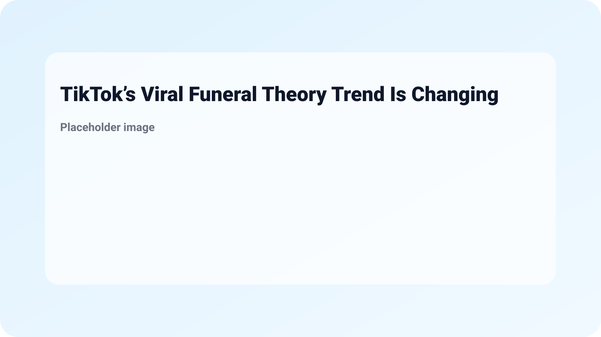

Understanding TikTok’s Viral Funeral Theory Trend
TikTok’s Viral Funeral Theory Trend Is Changing Life Perspectives - Life & Style, and it’s becoming a notable force among younger generations. This trend involves a thought experiment where individuals reflect on how they would like their lives, values, and decisions to be perceived at their hypothetical funerals. The concept encourages users to examine their current lifestyles, align them with their aspirations, and prioritize what truly matters to them.
As TikTok continues to evolve and influence cultural phenomenons, the Funeral Theory is making a significant impact. This trend resonates particularly with those in their teens and twenties, providing a fresh perspective on the age-old questions of legacy and purpose. By engaging with this content, young people are finding new ways to frame their goals, relationships, and self-identity.
Understanding the implications of the Funeral Theory reveals why it’s so captivating. The trend is not merely an engagement tool; it fosters profound reflection on life choices. Users are encouraged to confront questions such as:

By contemplating these questions, individuals can experience personal growth and a deeper understanding of their motivations. This does not only lead to enhanced self-awareness but also encourages healthier lifestyle choices.
As the world embraces these reflections, several changes may surface by 2026, driven by the dialogues sparked by TikTok’s Funeral Theory. Here are some predicted shifts:

These changes reflect an evolving mindset among the youth willing to redefine success on their own terms. By 2026, we might see a society more attuned to meaningful existence, making decisions rooted in authenticity rather than superficial expectations.
Feeling inspired by this trend? Here are steps you can take to incorporate the Funeral Theory into your daily life:

The Funeral Theory is a thought experiment popularized on TikTok, prompting users to contemplate how they want to be remembered, encouraging them to evaluate their life choices in light of their desired legacy.

Younger generations are drawn to this trend as it promotes self-reflection and meaningful discussions around life, purpose, and identity, allowing them to prioritize their values over societal expectations.
You can begin by reflecting on your core values, discussing aspirations with others, and setting concrete goals that align with the legacy you wish to leave behind.

Yes, engaging with mental health resources, journals, or online workshops can aid in deepening your understanding of this concept and how to implement it in your life.
We might see an increase in mental health awareness, a shift towards valuing experiences over possessions, and a transformation in career choices that embrace passion and authenticity.

As you explore TikTok’s Viral Funeral Theory Trend, remember that it’s about more than just engaging with a social media trend. It’s an invitation to actively reconsider what’s essential in your life. To build this newfound perspective, stick to your reflections, engage in meaningful conversations, and progressively align your actions with your values. For more 2026 tech trends that might impact this discourse, check out 2026: Tecno’s latest concept phone is lit by neon and delve into 5 Things About Qualcomm’s new chip is geared toward wearable AI gadgets (2026).
More from MingMong:
Source: Link